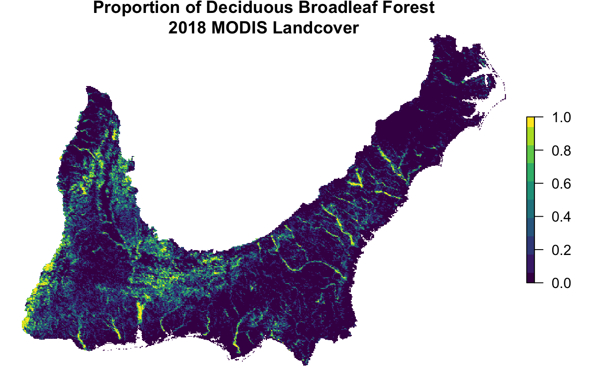
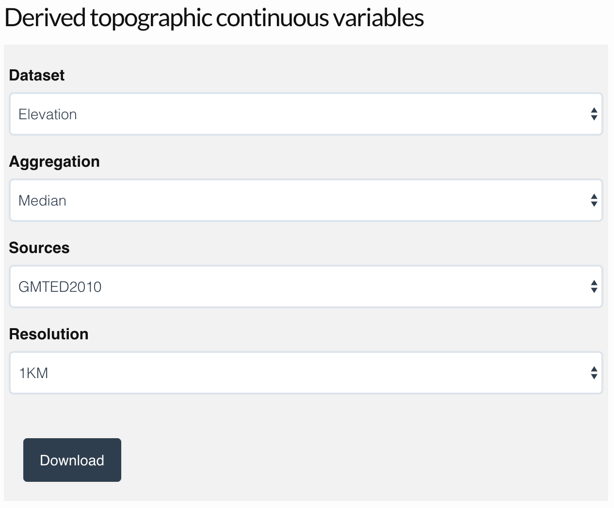

Chapter 3 Habitat Covariates
3.1 Introduction
Species distribution models work by finding associations between species occurrence or abundance and environmental variables. Using these relationships, it’s possible to predict the distribution in areas that aren’t sampled, provided we know the value of the environmental variables in these areas. Therefore, to proceed with the modeling in the next several chapters, we’ll need to prepare a suite of environmental variables to be used as covariates in our models. The particular set of covariates that’s most suitable for a given study will depend on the focal species, region, and time period, as well as the availability of data. When species distributions are well defined by the environmental covariates, extrapolations to unsurveyed areas will be more accurate. So, itss worth considering which environmental covariates are important for your species. Scientists can use many variables to characterise a species distribution - for example, climate, weather, and soil type. Here we use only landcover and elevation as example environmental covariates.
Fortunately, there are an abundance of freely available, satellite-based land cover products derived from satellites such as Landsat, SPOT, and MODIS that are suitable for distribution modeling. This land cover data will act as a proxy for habitat and throughout this book we’ll often use habitat and land cover interchangeably. In addition, we’ll include elevation as an additional covariate, which can be important for many species.
For the examples in this book, we’ll use land cover covariates derived from the MODIS MCD12Q1 v006 land cover product (Friedl and Sulla-Menashe 2015). This product has global coverage at 500 m spatial resolution and annual temporal resolution from 2001-2018. These data are available for several different classification schemes. We’ll use the University of Maryland (UMD) land cover classification, which provides a globally accurate classification of land cover in our experience. This system classifies pixels into one of 16 different land cover classes:
| Class | Name | Description |
|---|---|---|
| 0 | Water bodies | At least 60% of area is covered by permanent water bodies. |
| 1 | Evergreen Needleleaf Forests | Dominated by evergreen conifer trees (canopy >2m). Tree cover >60%. |
| 2 | Evergreen Broadleaf Forests | Dominated by evergreen broadleaf and palmate trees (canopy >2m). Tree cover >60%. |
| 3 | Deciduous Needleleaf Forests | Dominated by deciduous needleleaf (e.g. larch) trees (canopy >2m). Tree cover >60%. |
| 4 | Deciduous Broadleaf Forests | Dominated by deciduous broadleaf trees (canopy >2m). Tree cover >60%. |
| 5 | Mixed Forests | Dominated by neither deciduous nor evergreen (40-60% of each) tree type (canopy >2m). Tree cover >60%. |
| 6 | Closed Shrublands | Dominated by woody perennials (1-2m height) >60% cover. |
| 7 | Open Shrublands | Dominated by woody perennials (1-2m height) 10-60% cover. |
| 8 | Woody Savannas | Tree cover 30-60% (canopy >2m). |
| 9 | Savannas | Tree cover 10-30% (canopy >2m). |
| 10 | Grasslands | Dominated by herbaceous annuals (<2m). |
| 11 | Permanent Wetlands | Permanently inundated lands with 30-60% water cover and >10% vegetated cover. |
| 12 | Croplands | At least 60% of area is cultivated cropland. |
| 13 | Urban and Built-up Lands | At least 30% impervious surface area including building materials, asphalt, and vehicles. |
| 14 | Cropland/Natural Vegetation Mosaics | Mosaics of small-scale cultivation 40-60% with natural tree, shrub, or herbaceous vegetation. |
| 15 | Non-Vegetated Lands | At least 60% of area is non-vegetated barren (sand, rock, soil) or permanent snow and ice with less than 10% vegetation. |
| 255 | Unclassified | Has not received a map label because of missing inputs. |
For a wide range of studies, this MODIS land cover dataset will be suitable for generating habitat covariates; however, there may be particular cases where the study species, habitat, or ecological question requires different, or more specialized, data. For example, shorebird distribution modeling would benefit from data on the extent of tidal flats, seabirds distributions are often influenced by ocean depth, and in many regions elevation plays a critical role in shaping species distributions. Regardless of which habitat data you decide to use for your project, this chapter should provide a template for how to prepare these data as covariates for modeling species distributions.
The following section will cover how to access and download MODIS land cover data. Next, we’ll demonstrate how to summarize these data within a neighborhood around each checklist location. Then, we’ll calculate a set of covariates over a regular grid, which we’ll use to make predictions of species distributions throughout our study area. Finally, as an example of including covariate data from multiple sources, we’ll demonstrate how to incorporate elevation data as an additional covariate. If you want to skip this section and jump straight to the modeling, you can download the data package, which includes all the prepared MODIS data that we’ll use in the remainder of this book.
3.2 Downloading MODIS data
As with most satellite data, MODIS data are provided as 1200 km by 1200 km tiles for ease of download. Each tile is a raster GIS dataset consisting of a regular grid of 500 m resolution cells. The surface of the Earth is divided up into a grid of these tiles, each given an ID, for example, h10v12 is the tile from the 10th column and 12th row of the grid. Compiling MODIS data for a given region requires figuring out which set of tiles covers the region, downloading those tiles, combining the tiles together into a single raster dataset, and converting from the native MODIS HDF format, which R can’t read, to a standard GeoTIFF format. This needs to be done for each year for which we want habitat data, and can be a time consuming and error prone process. Fortunately, the R package MODIS automates most of these steps. Unfortunately, this package can be challenging and confusing to get working. With this in mind, this section will provide detailed instruction for setting up and using the MODIS package.
Let’s start by figuring out the tile IDs for the tiles that BCR 27 spans. Recall that we prepared a BCR boundary in Section 1.3.6 of the Introduction; if you haven’t already done so, download the data package now to get that boundary. Given a set of spatial features, the MODIS package can quickly tell us which MODIS tiles we need.
library(sf)
library(raster)
library(MODIS)
library(exactextractr)
library(viridis)
library(tidyverse)
# resolve namespace conflicts
select <- dplyr::select
map <- purrr::map
projection <- raster::projection
# bcr 27 boundary
bcr <- read_sf("data/gis-data.gpkg", "bcr") %>%
filter(bcr_code == 27) %>%
# project to the native modis projection
st_transform(crs = paste("+proj=sinu +lon_0=0 +x_0=0 +y_0=0",
"+a=6371007.181 +b=6371007.181 +units=m +no_defs"))
# load ebird data
ebird <- read_csv("data/ebd_woothr_june_bcr27_zf.csv")
# get list of tiles required to cover this bcr
tiles <- getTile(bcr)
tiles@tile
#> [1] "h10v06" "h10v05" "h11v05"So, we’ll need to download these three tiles for each of the 10 years from 2010-2019.
3.2.1 MODIS setup
Before we start using MODIS for the first time, a bit of setup is required. First, sign up for a NASA Earthdata account to get access to MODIS, and other NASA data. Then use MODIS::EarthdataLogin(usr = "username", pwd = "password"), with the username and password you just created, to store your login credentials so the MODIS package can access them.
Next, you’ll need to install GDAL, an open source library for working with geospatial data that’s needed for processing the MODIS tiles. The steps for installing GDAL are system dependent:
- Mac OS X: First, check if GDAL is installed with HDF4 support by running
gdal-config --formatsin Terminal. If you seehdf4in the list, you don’t need to do anything else! If not, install the Homebrew package manager by following the instructions on the website. Then, run the following commands in Terminal to install GDAL:
brew tap osgeo/osgeo4mac
brew install hdf4
brew link --overwrite hdf4
brew install osgeo-gdal
brew link --force osgeo-gdal- Windows: install GDAL using OSGeo4W, a suite of open source geospatial tools. In R, run
MODIS:::checkTools("GDAL"), which will search your system for GDAL and suggest a command such asMODIS::MODISoptions(gdalPath = "c:/OSGeo4W64/bin")that will make GDAL available to theMODISpackage. Run this command and, when it asks, agree to making the settings permanent. - Linux: run
sudo apt-get install gdal-binin the terminal.
Finally, run MODIS:::checkTools("GDAL") to check that GDAL is installed and that the MODIS package can find it. If GDAL can’t be found, you’ll need to manually locate it and use MODIS::MODISoptions(gdalPath = "path/to/gdal/") to tell the MODIS package where it is.
3.2.2 Download using R
Once all the setup steps have been completed, we can start downloading some data! The MODIS function runGdal() downloads and processes MODIS tiles into a single GeoTIFF for each year. Note that at the time of writing, land cover data from 2019 haven’t been prepared yet, so we’ll use 2018 data for both 2018 and 2019. The key arguments to runGdal() are:
product: is the specific MODIS product to download. For a full list of available datasets useMODIS::getProduct().collection: each MODIS product may have multiple collections, corresponding roughly to versions. UsegetCollection()to find the available collection for a given product.SDSstring: a string specifying which bands to extract, with zeros for bands to drop and 1 for bands to keep. Most MODIS products have multiple bands stored in a single raster file, for example, reflectances in different wavelength ranges or, in our case, land cover using different land cover classification systems. The documentation for the MCD12Q1 dataset shows that there are 13 bands in the downloaded files, and we’re interested in band 2, which contains the UMD landcover classification.extent: any of several different spatial objects specifying the region that we want data for. In our case, we’ll use the BCR polygon; however, for a list of available options consult the help forgetTile(). Note thatrunGdal()will return raster data in the same projection as the input extent, which is why we projected the BCR boundary to the MODIS sinusoidal projection.beginandend: the start and end dates of the time period from which to extract data. Although the land cover data are only available annually, we need to specify full dates because some other products are available on a more granular basis.outDirPath: directory to store processed MODIS data.job: a name for this task, which will become the sub-directory ofoutDirPathwithin which the processed data are stored.
# earliest year of ebird data
begin_year <- format(min(ebird$observation_date), "%Y.01.01")
# end date for ebird data
end_year <- format(max(ebird$observation_date), "%Y.12.31")
# download tiles and combine into a single raster for each year
tifs <- runGdal(product = "MCD12Q1", collection = "006", SDSstring = "01",
extent = bcr %>% st_buffer(dist = 10000),
begin = begin_year, end = end_year,
outDirPath = "data", job = "modis",
MODISserverOrder = "LPDAAC") %>%
pluck("MCD12Q1.006") %>%
unlist()
# rename tifs to have more descriptive names
new_names <- format(as.Date(names(tifs)), "%Y") %>%
sprintf("modis_mcd12q1_umd_%s.tif", .) %>%
file.path(dirname(tifs), .)
file.rename(tifs, new_names)If everything ran smoothly, we now have annual GeoTIFFs of MODIS land cover data that we can load into R. You may see error messages stating Cannot find proj.db, or something similar, these can be safely ignored provided the modis have been created in data/modis/ directory.
# load the landcover data
landcover <- list.files("data/modis", "^modis_mcd12q1_umd",
full.names = TRUE) %>%
stack()
# label layers with year
landcover <- names(landcover) %>%
str_extract("(?<=modis_mcd12q1_umd_)[0-9]{4}") %>%
paste0("y", .) %>%
setNames(landcover, .)
landcover
#> class : RasterStack
#> dimensions : 1969, 4301, 8468669, 9 (nrow, ncol, ncell, nlayers)
#> resolution : 463, 463 (x, y)
#> extent : -8745491, -6752783, 3242262, 4154525 (xmin, xmax, ymin, ymax)
#> crs : +proj=sinu +lon_0=0 +x_0=0 +y_0=0 +a=6371007.181 +b=6371007.181 +units=m +no_defs
#> names : y2010, y2011, y2012, y2013, y2014, y2015, y2016, y2017, y2018
#> min values : 0, 0, 0, 0, 0, 0, 0, 0, 0
#> max values : 255, 255, 255, 255, 255, 255, 255, 255, 255These data have not been prepared yet for the last couple years, so we’ll need to fill in the missing years using the most recent year for which there is data. To facilitate that, let’s figure out which is the most recent year with data.
So, we have landcover data up to 2018.
3.2.3 Troubleshooting
If the call to runGDAL() didn’t work for you, don’t worry, you’re not alone! It’s challenging to get the MODIS package working and errors are common when you’re first trying to get it set up. The most common error is not having GDAL installed correctly, which will give an error like GDAL not installed or configured. Either you don’t have GDAL at all or you have it, but it doesn’t have support for HDF4 files (this is the native format for MODIS data). Try following the above instructions again. If it still doesn’t work, consult the instructions on the MODIStsp website for installing GDAL.
Another error you may see is: Make sure either 'wget' or 'curl' is available in order to download data from LP DAAC or NSIDC.. This should only arise on versions of Windows before Windows 10. If you see this error, you’ll need to install curl, which is used by R to download the MODIS tiles. There is a StackOverflow question with excellent instructions for installing curl and getting it setup on your system.
If these tips haven’t solved your particular problem, you’ll need to turn to Google to troubleshoot or find someone who has experience with these tools and ask them to help. Good luck!
3.3 Landscape metrics
At this point we could use the MODIS land cover data directly, simply extracting the land cover class for each checklist location. However, we instead advocate summarizing the land cover data within a neighborhood around the checklist locations. As discussed in Section 1.1, checklist locations are not precise, so it’s more appropriate to use the habitat in the surrounding area, rather than only at the checklist location. More fundamentally, organisms interact with their environment not at a single point, but at the scale of a landscape, so it’s important to include habitat information characterizing a suitably-sized landscape around the observation location.
There are a variety of landscape metrics that can be used to characterize the composition (what habitat is available) and configuration (how that habitat is arranged spatially) of landscapes. The simplest metric of landscape composition is the proportion of the landscape in each land cover class (PLAND in the parlance of FRAGSTATS). For a broad range of scenarios, PLAND is a reliable choice for calculating habitat covariates in distribution modeling. Based on our experience working with eBird data, an approximately 2.5 km by 2.5 km neighborhood (5 by 5 MODIS cells) centered on the checklist location is sufficient to account for the spatial precision in the data when the maximum distance of travelling counts has been limited to 5 km, while being a relevant ecological scale for many bird species.
We’ll start by finding the full set of unique checklists locations for each year in the eBird data. Then we convert these locations to spatial sf features and project them to the sinusoidal equal area projection used by MODIS. We’ll buffer these points to create a neighborhood around each location with a diamter equal to 5 MODIS cells. Finally, we split the neighborhoods up by year so we can match to MODIS land cover data from the corresponding year.
neighborhood_radius <- 5 * ceiling(max(res(landcover))) / 2
ebird_buff <- ebird %>%
distinct(year = format(observation_date, "%Y"),
locality_id, latitude, longitude) %>%
# for 2019 use 2018 landcover data
mutate(year_lc = if_else(as.integer(year) > max_lc_year,
as.character(max_lc_year), year),
year_lc = paste0("y", year_lc)) %>%
# convert to spatial features
st_as_sf(coords = c("longitude", "latitude"), crs = 4326) %>%
# transform to modis projection
st_transform(crs = projection(landcover)) %>%
# buffer to create neighborhood around each point
st_buffer(dist = neighborhood_radius) %>%
# nest by year
nest(data = c(year, locality_id, geometry))Now, we’ll loop over the years and for each square neighborhood extract all the raster values within that neighborhood and count the number of cells of each landcover class. We use the exactextractr package for this, since it’s often orders of magnitude faster than using raster::extract().
# function to summarize landcover data for all checklists in a given year
calculate_pland <- function(yr, regions, lc) {
locs <- st_set_geometry(regions, NULL)
exact_extract(lc[[yr]], regions, progress = FALSE) %>%
map(~ count(., landcover = value)) %>%
tibble(locs, data = .) %>%
unnest(data)
}
# iterate over all years extracting landcover for all checklists in each
lc_extract <- ebird_buff %>%
mutate(pland = map2(year_lc, data, calculate_pland, lc = landcover)) %>%
select(pland) %>%
unnest(cols = pland)Now we have the set of land cover values within a neighborhood around each checklist location. We can summarize these data within each neighborhood to calculate PLAND: the proportion of the neighborhood within each land cover class.
pland <- lc_extract %>%
# calculate proporiton
group_by(locality_id, year) %>%
mutate(pland = n / sum(n)) %>%
ungroup() %>%
select(-n) %>%
# remove NAs after tallying so pland is relative to total number of cells
filter(!is.na(landcover))Finally, we’ll convert the numeric landcover codes to more descriptive names and transform the data to a wide format with each row a location and the PLAND values in columns.
# convert names to be more descriptive
lc_names <- tibble(landcover = 0:15,
lc_name = c("pland_00_water",
"pland_01_evergreen_needleleaf",
"pland_02_evergreen_broadleaf",
"pland_03_deciduous_needleleaf",
"pland_04_deciduous_broadleaf",
"pland_05_mixed_forest",
"pland_06_closed_shrubland",
"pland_07_open_shrubland",
"pland_08_woody_savanna",
"pland_09_savanna",
"pland_10_grassland",
"pland_11_wetland",
"pland_12_cropland",
"pland_13_urban",
"pland_14_mosiac",
"pland_15_barren"))
pland <- pland %>%
inner_join(lc_names, by = "landcover") %>%
arrange(landcover) %>%
select(-landcover)
# tranform to wide format, filling in implicit missing values with 0s%>%
pland <- pland %>%
pivot_wider(names_from = lc_name,
values_from = pland,
values_fill = list(pland = 0))
# save
write_csv(pland, "data/modis_pland_location-year.csv")3.4 Prediction surface
After fitting species distribution models, the goal is typically to make predictions throughout the study area. To do this, we’ll need a regular grid of habitat covariates over which to make predictions. In this section, we’ll create such a prediction surface for BCR 27 using the MODIS land cover data from the most recent year for which they’re available. To start, we’ll need a template raster with cells equal in size to the neighborhoods we defined in the previous section: 5 by 5 MODIS land cover cells. We can use raster::aggregate() to achieve this. We’ll also use raster::rasterize() to assign the value 1 to all cells within BCR 27 and leave all cells outside BCR 27 empty.
agg_factor <- round(2 * neighborhood_radius / res(landcover))
r <- raster(landcover) %>%
aggregate(agg_factor)
r <- bcr %>%
st_transform(crs = projection(r)) %>%
rasterize(r, field = 1) %>%
# remove any empty cells at edges
trim()
r <- writeRaster(r, filename = "data/prediction-surface.tif", overwrite = TRUE)Next, for each cell of this raster, we’ll calculate the PLAND metrics using the same approach as the previous section. Note that we will only be creating this prediction surface for the most current year of landcover data in our example.
# get cell centers and create neighborhoods
r_centers <- rasterToPoints(r, spatial = TRUE) %>%
st_as_sf() %>%
transmute(id = row_number())
r_cells <- st_buffer(r_centers, dist = neighborhood_radius)
# extract landcover values within neighborhoods, only needed most recent year
lc_extract_pred <- landcover[[paste0("y", max_lc_year)]] %>%
exact_extract(r_cells, progress = FALSE) %>%
map(~ count(., landcover = value)) %>%
tibble(id = r_cells$id, data = .) %>%
unnest(data)
# calculate the percent for each landcover class
pland_pred <- lc_extract_pred %>%
group_by(id) %>%
mutate(pland = n / sum(n)) %>%
ungroup() %>%
select(-n) %>%
# remove NAs after tallying so pland is relative to total number of cells
filter(!is.na(landcover))
# convert names to be more descriptive
pland_pred <- pland_pred %>%
inner_join(lc_names, by = "landcover") %>%
arrange(landcover) %>%
select(-landcover)
# tranform to wide format, filling in implicit missing values with 0s
pland_pred <- pland_pred %>%
pivot_wider(names_from = lc_name,
values_from = pland,
values_fill = list(pland = 0)) %>%
mutate(year = max_lc_year) %>%
select(id, year, everything())
# join in coordinates
pland_coords <- st_transform(r_centers, crs = 4326) %>%
st_coordinates() %>%
as.data.frame() %>%
cbind(id = r_centers$id, .) %>%
rename(longitude = X, latitude = Y) %>%
inner_join(pland_pred, by = "id")Keeping these data in a data frame is a compact way to store them and will be required once we make model predictions in later chapters. However, we can always use the raster template to convert these PLAND metrics into a spatial format, for example, if we want to map them. Let’s look at how this works for land cover class 4: deciduous broadleaf forest.
forest_cover <- pland_coords %>%
# convert to spatial features
st_as_sf(coords = c("longitude", "latitude"), crs = 4326) %>%
st_transform(crs = projection(r)) %>%
# rasterize points
rasterize(r, field = "pland_04_deciduous_broadleaf") %>%
# project to albers equal-area for mapping
projectRaster(crs = st_crs(102003)$proj4string, method = "ngb") %>%
# trim off empty edges of raster
trim()
# make a map
par(mar = c(0.25, 0.25, 2, 0.25))
t <- str_glue("Proportion of Deciduous Broadleaf Forest\n",
"{max_lc_year} MODIS Landcover")
plot(forest_cover, axes = FALSE, box = FALSE, col = viridis(10), main = t)
3.5 Elevation
In some scenarios, you may want to include additional covariates to complement the land cover variables. There is a wealth of open access raster data available for this purpose; however, in most cases, these data will not have a simple R interface for accessing them. Instead, you’ll typically have to manually download and process these data. As an example of how this works, we’ll demonstrate how to include covariates for elevation, which frequently plays an important role in shaping species distributions.
Amatulli et al. (2018) provide a suite of global, 1km resolution topographic variables designed for use in distribution modeling. A range of variables are available, including elevation, slope, roughness, and many others; we’ll focus on elevation here, but the approach can easily be applied to other variables. To start, visit the website for these data, download the 1 km resolution median elevation product, and save the file (elevation_1KMmd_GMTEDmd.tif) in the data/ subdirectory of your project:

Next we’ll load the file, crop it down from it’s full global extent to just the portion we need for BCR 27, and reproject it to the MODIS sinusoidal projection.
elev <- raster("data/elevation_1KMmd_GMTEDmd.tif")
# crop, buffer bcr by 10 km to provide a little wiggly room
elev <- bcr %>%
st_buffer(dist = 10000) %>%
st_transform(crs = projection(elev)) %>%
crop(elev, .) %>%
projectRaster(crs = projection(landcover))Now we extract the elevation values within the neighborhood of each checklist location just as we did before for the land cover data. Then we’ll calculate the median and standard deviation of the elevation within each neighborhood.
# buffer each checklist location
ebird_buff_noyear <- ebird %>%
distinct(locality_id, latitude, longitude) %>%
st_as_sf(coords = c("longitude", "latitude"), crs = 4326) %>%
st_transform(crs = projection(elev)) %>%
st_buffer(dist = neighborhood_radius)
# extract elevation values and calculate median and sd
locs <- st_set_geometry(ebird_buff_noyear, NULL) %>%
mutate(id = row_number())
elev_checklists <- exact_extract(elev, ebird_buff_noyear, progress = FALSE) %>%
map_dfr(~ tibble(elevation_median = mean(.$value, na.rm = TRUE),
elevation_sd = sd(.$value, na.rm = TRUE))) %>%
# join to lookup table to get locality_id
bind_cols(locs, .)We’ll need to repeat this process to calculate the elevation covariates for the prediction surface.
# extract and calculate median and sd
elev_pred <- exact_extract(elev, r_cells, progress = FALSE) %>%
map_dfr(~ tibble(elevation_median = mean(.$value, na.rm = TRUE),
elevation_sd = sd(.$value, na.rm = TRUE))) %>%
# join to lookup table to get locality_id
bind_cols(st_drop_geometry(r_cells), .)Finally, we’ll combine these elevation covariates with the land cover covariates.
# checklist covariates
pland_elev_checklist <- inner_join(pland, elev_checklists, by = "locality_id")
write_csv(pland_elev_checklist, "data/pland-elev_location-year.csv")
# prediction surface covariates
pland_elev_pred <- inner_join(pland_coords, elev_pred, by = "id")
write_csv(pland_elev_pred, "data/pland-elev_prediction-surface.csv")
glimpse(pland_elev_pred)
#> Rows: 90,949
#> Columns: 22
#> $ id <int> 1, 2, 3, 4, 5, 6, 7, 8, 9, 10, 11, 12, 13, 14, 15, 16, 17, 18, 19, 20, 21, 22, 23, 24, 25…
#> $ longitude <dbl> -77.3, -77.3, -77.3, -77.3, -77.3, -77.2, -77.4, -77.3, -77.3, -77.3, -77.3, -77.2, -77.2…
#> $ latitude <dbl> 37.2, 37.2, 37.2, 37.2, 37.2, 37.2, 37.2, 37.2, 37.2, 37.2, 37.2, 37.2, 37.2, 37.2, 37.2,…
#> $ year <int> 2018, 2018, 2018, 2018, 2018, 2018, 2018, 2018, 2018, 2018, 2018, 2018, 2018, 2018, 2018,…
#> $ pland_00_water <dbl> 0, 0, 0, 0, 0, 0, 0, 0, 0, 0, 0, 0, 0, 0, 0, 0, 0, 0, 0, 0, 0, 0, 0, 0, 0, 0, 0, 0, 0, 0,…
#> $ pland_01_evergreen_needleleaf <dbl> 0.0000, 0.0000, 0.0000, 0.0000, 0.0000, 0.0000, 0.0000, 0.0000, 0.0000, 0.0000, 0.0000, 0…
#> $ pland_02_evergreen_broadleaf <dbl> 0, 0, 0, 0, 0, 0, 0, 0, 0, 0, 0, 0, 0, 0, 0, 0, 0, 0, 0, 0, 0, 0, 0, 0, 0, 0, 0, 0, 0, 0,…
#> $ pland_03_deciduous_needleleaf <dbl> 0, 0, 0, 0, 0, 0, 0, 0, 0, 0, 0, 0, 0, 0, 0, 0, 0, 0, 0, 0, 0, 0, 0, 0, 0, 0, 0, 0, 0, 0,…
#> $ pland_04_deciduous_broadleaf <dbl> 0.0000, 0.1724, 0.0345, 0.0000, 0.0000, 0.0345, 0.0000, 0.0000, 0.0000, 0.0000, 0.0345, 0…
#> $ pland_05_mixed_forest <dbl> 0.0000, 0.0000, 0.0000, 0.1379, 0.1379, 0.2759, 0.0000, 0.0000, 0.0345, 0.1379, 0.0345, 0…
#> $ pland_06_closed_shrubland <dbl> 0, 0, 0, 0, 0, 0, 0, 0, 0, 0, 0, 0, 0, 0, 0, 0, 0, 0, 0, 0, 0, 0, 0, 0, 0, 0, 0, 0, 0, 0,…
#> $ pland_07_open_shrubland <dbl> 0, 0, 0, 0, 0, 0, 0, 0, 0, 0, 0, 0, 0, 0, 0, 0, 0, 0, 0, 0, 0, 0, 0, 0, 0, 0, 0, 0, 0, 0,…
#> $ pland_08_woody_savanna <dbl> 0.966, 0.828, 0.724, 0.690, 0.862, 0.690, 0.621, 0.966, 0.793, 0.828, 0.793, 0.310, 0.552…
#> $ pland_09_savanna <dbl> 0.0000, 0.0000, 0.2069, 0.1724, 0.0000, 0.0000, 0.0345, 0.0345, 0.1379, 0.0345, 0.1379, 0…
#> $ pland_10_grassland <dbl> 0.0345, 0.0000, 0.0000, 0.0000, 0.0000, 0.0000, 0.0000, 0.0000, 0.0345, 0.0000, 0.0000, 0…
#> $ pland_11_wetland <dbl> 0, 0, 0, 0, 0, 0, 0, 0, 0, 0, 0, 0, 0, 0, 0, 0, 0, 0, 0, 0, 0, 0, 0, 0, 0, 0, 0, 0, 0, 0,…
#> $ pland_12_cropland <dbl> 0.0000, 0.0000, 0.0000, 0.0000, 0.0000, 0.0000, 0.0000, 0.0000, 0.0000, 0.0000, 0.0000, 0…
#> $ pland_13_urban <dbl> 0.0000, 0.0000, 0.0345, 0.0000, 0.0000, 0.0000, 0.3448, 0.0000, 0.0000, 0.0000, 0.0000, 0…
#> $ pland_14_mosiac <dbl> 0.000, 0.000, 0.000, 0.000, 0.000, 0.000, 0.000, 0.000, 0.000, 0.000, 0.000, 0.000, 0.000…
#> $ pland_15_barren <dbl> 0, 0, 0, 0, 0, 0, 0, 0, 0, 0, 0, 0, 0, 0, 0, 0, 0, 0, 0, 0, 0, 0, 0, 0, 0, 0, 0, 0, 0, 0,…
#> $ elevation_median <dbl> 40.0, 41.8, 42.6, 42.8, 42.5, 42.8, 45.6, 44.7, 43.6, 41.2, 40.6, 40.9, 42.8, 78.0, 68.1,…
#> $ elevation_sd <dbl> 3.75, 2.78, 2.41, 3.28, 1.40, 1.66, 2.74, 3.33, 2.29, 2.32, 2.52, 3.41, 1.53, 8.61, 7.02,…This completes the data preparation. The following chapters will focus on using these data to model species distributions.
References
Amatulli, Giuseppe, Sami Domisch, Mao-Ning Tuanmu, Benoit Parmentier, Ajay Ranipeta, Jeremy Malczyk, and Walter Jetz. 2018. “A Suite of Global, Cross-Scale Topographic Variables for Environmental and Biodiversity Modeling.” Scientific Data 5 (March): 180040. https://doi.org/10.1038/sdata.2018.40.
Friedl, Mark, and Damien Sulla-Menashe. 2015. “MCD12Q1 MODIS/Terra+Aqua Land Cover Type Yearly L3 Global 500m SIN Grid V006.” NASA EOSDIS Land Processes DAAC. https://doi.org/10.5067/MODIS/MCD12Q1.006.